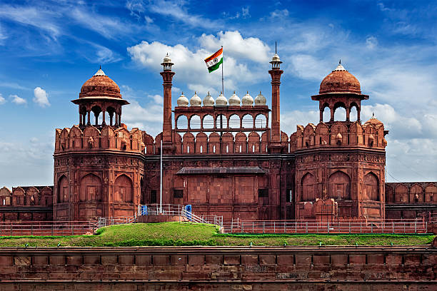

Taj Mahal

The Taj Mahal is one of the most famous monuments in India. It is located in Agra and was built by Shah Jahan.
The Taj Mahal is one of the most famous monuments in India. It is located in Agra and was built by Shah Jahan.

India Gate is a famous war memorial located in New Delhi. It was built in memory of Indian soldiers.

Qutub Minar is a famous historical monument located in Delhi. It is one of the tallest brick minarets in the world.

The Red Fort is a historic fort located in Delhi. It was built by Mughal emperor Shah Jahan.

The Gateway of India is a famous landmark located in Mumbai. It was built during the British colonial period.

Hampi is a UNESCO World Heritage site located in Karnataka. It was the capital of the Vijayanagara Empire.

Hawa Mahal is a famous palace located in Jaipur. It was built in the 18th century and is known for its intricate architecture.

Charminar is a famous mosque and cultural monument located in Hyderabad. It was built in 1591 and is known for its distinctive architecture.